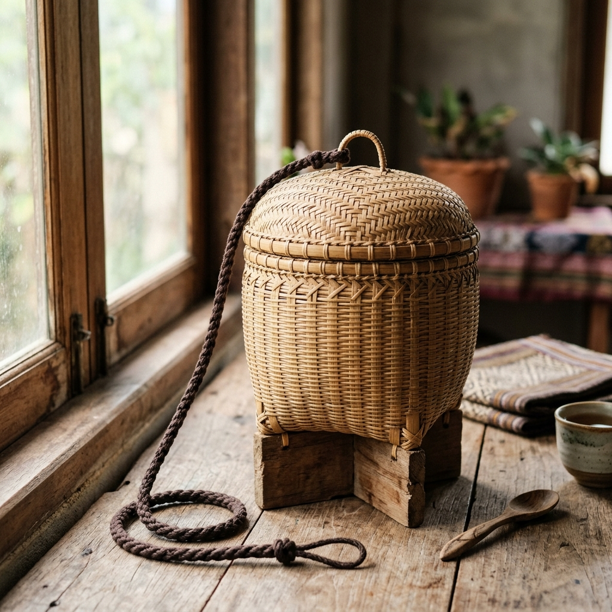
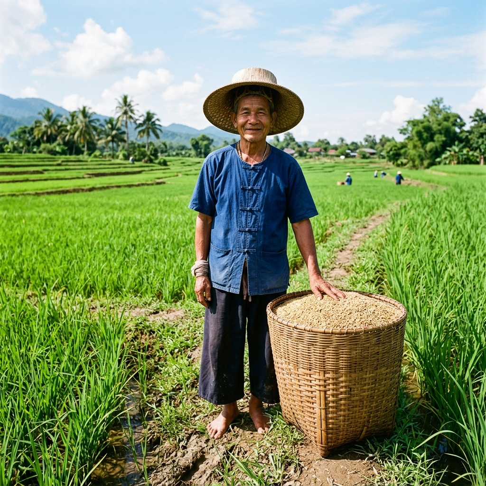
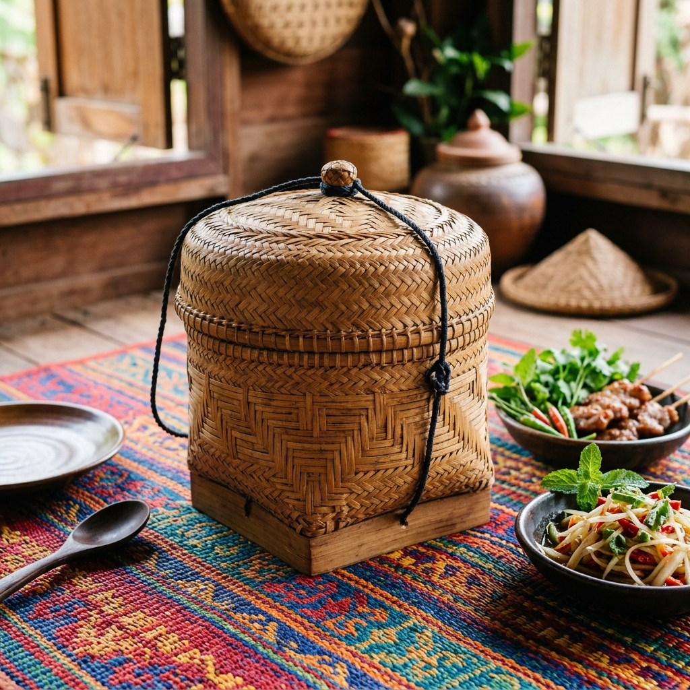
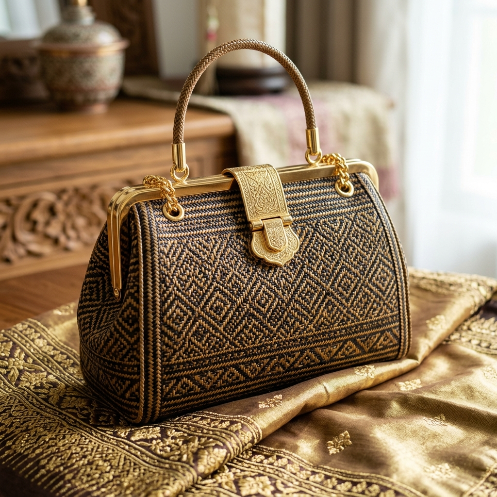

ศิลปะและประโยชน์ใช้สอยที่สะท้อนจากภูมิศาสตร์และขนบประเพณี
ประเทศไทยเป็นดินแดนที่มีความอุดมสมบูรณ์มาแต่โบราณ สังคมไทยในอดีต จึงเป็นสังคมเกษตรกรรม ประชากรส่วนใหญ่เลี้ยงชีพ ด้วยการทำไร่ไถนา และทำประมง เป็นหลักการประกอบอาชีพของชาวบ้านทั่วไป จะใช้เครื่องมือเครื่องใช้ที่ผลิตขึ้นเอง เครื่องจักสานเป็นงานศิลปหัตถกรรมที่คนไทยใช้เป็นเครื่องมือเครื่องใช้ต่างๆ มากมายหลายชนิด และเครื่องจักสานที่ผลิตขึ้นในภาคต่างๆ นั้นมักใช้วัตถุดิบในท้องถิ่น ที่แตกต่างกันไป ทำให้เครื่องจักสานที่ทำขึ้นเป็นรูปแบบที่แตกต่างกันไป ตามประเภทของวัตถุดิบ ประโยชน์ใช้สอย สภาพการดำรงชีวิต และสภาพภูมิศาสตร์ ความนิยมตามขนบประเพณี และวัฒนธรรมของแต่ละท้องถิ่น สิ่งเหล่านี้เป็นองค์ประกอบสำคัญ ที่ทำให้เครื่องจักสานแต่ละภาค แต่ละถิ่นไทย มีรูปแบบแตกต่างกันไปอย่างน่าสนใจ

ภาพประกอบ: ก่องข้าว เอกลักษณ์เครื่องจักสานภาคเหนือ
ภาคเหนือ หรือล้านนาไทย เป็นดินแดนที่มีศิลปวัฒนธรรมเฉพาะถิ่น เป็นของตนเอง เป็นเหตุให้เครื่องจักสานในภาคเหนือ มีเอกลักษณ์ที่แตกต่างไปจากภาคอื่น นอกจากนี้ ภาคเหนือ หรือล้านนาไทย มีสภาพภูมิศาสตร์ที่แตกต่างไปจากภาคอื่นๆ
สภาพการประกอบอาชีพด้านเกษตรกรรม ทำให้ภาคเหนือเป็นแหล่งผลิตเครื่องมือเครื่องใช้จักสานที่สำคัญ นอกจากนี้ ภาคเหนือยังมีวัตถุดิบหลายชนิด ที่นำมาทำเครื่องจักสานได้ เช่น กก แหย่ง ใบลาน และไม้ไผ่ โดยเฉพาะอย่างยิ่งไม้ไผ่ ซึ่งมีหลายชนิดที่ใช้ทำเครื่องจักสานได้ดี
นอกจากสภาพภูมิประเทศ และการประกอบอาชีพของภาคเหนือ ที่เอื้ออำนวยให้ประชาชนทำเครื่องจักสานแล้ว ศิลปวัฒนธรรม ขนบประเพณี และศาสนาของภาคเหนือ ก็เป็นองค์ประกอบสำคัญ ที่ทำให้เครื่องจักสานภาคเหนือ มีเอกลักษณ์เป็นของตนเอง ภาคเหนือหรือล้านนาไทยเป็นดินแดนที่เจริญรุ่งเรืองอยู่ในวงล้อมของขุนเขา ทำให้ภาคเหนือมีศิลปวัฒนธรรมเป็นของตนเองมาแต่โบราณ มีภาษาพูด ภาษาเขียน ขนบประเพณี เป็นของตนเอง
การทำเครื่องจักสานพื้นบ้านภาคเหนือทำสืบต่อกันมาแต่โบราณ ดังมีหลักฐานปรากฏในภาพจิตรกรรมฝาผนังหลายแห่ง เช่น ภาพชาวบ้านกับเครื่องจักสานในภาพจิตรกรรมฝาผนังวิหารวัดพระสิงห์วรวิหาร อำเภอเมืองเชียงใหม่ เป็นภาพชาวบ้านกำลังนั่งสนทนากันอยู่ ข้างๆ ตัว มีภาชนะจักสานชนิดหนึ่งที่เรียกว่า เปี้ยด หรือกระบุงวางอยู่ รูปทรงของเปี้ยดในภาพคล้ายกับเปี้ยดที่ใช้อยู่ในปัจจุบัน นอกจากนี้ วัฒนธรรมการบริโภคข้าวเหนียวของชาวเหนือ ก็เป็นองค์ประกอบสำคัญอีกประการหนึ่ง ที่ทำให้เกิดเครื่องจักสาน ที่เกี่ยวเนื่องกับการบริโภคข้าวเหนียวหลายอย่าง เช่น ลังถึง ก๋วย ซ้าหวด ก่องข้าว กระติบข้าว แอบข้าว ขันโตก ฯลฯ
ภาชนะสำหรับใส่ข้าวเหนียวนึ่ง สานด้วยไม้ไผ่ มีขนาดและรูปทรงต่างๆ กัน ก่องข้าวของภาคเหนือทั่วไป แบ่งออกเป็น ๓ ส่วน คือ ส่วนฐาน มักจะทำด้วยไม้เป็นรูปกากบาทติดอยู่กับส่วนก้น เพื่อใช้เป็นฐานสำหรับตั้ง ตัวก่อง มักสานก้นเป็นรูปสี่เหลี่ยมหรือกลม ต่อขึ้นมาเป็นทรงกระบอกคอคอดเข้าเล็กน้อย ส่วนที่สามคือ ฝา มีลักษณะเป็นฝาครอบ มักจะมีหูสำหรับร้อยเชือกที่ใช้เป็นที่หิ้วหรือแขวน
ภาชนะใส่ข้าวเหนียวเช่นเดียวกับก่องข้าว แต่มีขนาดเล็กกว่า สำหรับพกพาติดตัวเวลาไปทำงานนอกบ้าน แอบข้าว มีส่วนประกอบสำคัญคือ ตัวแอบ รูปร่างคล้ายกล่องสี่เหลี่ยมผืนผ้า ฝาแอบ รูปร่างเหมือนตัวแอบแต่ขนาดใหญ่กว่า เพราะใช้ครอบแอบข้าว แอบข้าวเหมาะสำหรับพกใส่ถุงย่าม ห่อผ้าคาด เอวออกไปทำนา ทำไร่
ภาชนะสานสำหรับใส่ของ เช่นเดียวกับกระบุงของภาคกลาง แต่บุงภาคเหนือมีรูปร่างต่างกันไป เช่น บุงเมืองแพร่ บุงลำพูน หรือบุงลำปาง จะมีขนาดค่อนข้างเล็กกว่ากระบุงภาคกลาง ทั้งนี้อาจจะเป็นเพราะต้องการลดน้ำหนักของบุงให้น้อย เพราะบุงภาคเหนือใช้หาบของในภูมิประเทศที่เป็นเนิน ไม่สามารถหาบของที่มีน้ำหนักมากเหมือนกับภาคกลาง ด้วยเหตุนี้จึงทำให้บุงภาคเหนือ มีลักษณะป้อมกลม ไม่เป็นเหลี่ยม เหมือนกระบุงภาคกลาง ช่วยให้มีความคงทน ไม่แตกหักเสียหายง่ายเมื่อกระทบกระแทก
เป็นภาชนะตักน้ำสานด้วยไม้ไผ่ ยาด้วยชันและน้ำมันยาง รูปร่างของน้ำทุ่งคล้ายกรวยป้อมๆ ส่วนก้นมนแหลม ที่ปากมีไม้ไขว้กันเป็นหูสำหรับผูกกับเชือก ความมนแหลมของก้นน้ำทุ่งจะช่วยให้น้ำทุ่งโคลงตัวคว่ำลงให้น้ำเข้าเมื่อโยนลงไปในบ่อ

ภาพประกอบ: ชาวไร่ชาวนากับ "งอบ" และ "กระบุง" อันเป็นเครื่องใช้คู่ท้องทุ่งภาคกลาง
ภาคกลางมีพื้นที่กว้างขวางและอุดมสมบูรณ์มากกว่าภาคอื่นๆ มีวัตถุดิบที่นำมาใช้ทำเครื่องจักสานหลายชนิด บริเวณที่ราบลุ่มเจ้าพระยา ท่าจีน และแม่กลอง ประชาชนนิยมปลูกไม้ไผ่อยู่ตามหมู่บ้าน นอกจากนี้ฝั่งตะวันตกบริเวณกาญจนบุรีและเพชรบุรีมีป่าไม้ไผ่อยู่เป็นจำนวนมาก ภาคกลางจึงใช้ไม้ไผ่สานสิ่งต่างๆ มากที่สุด แต่ก็มีการใช้วัตถุดิบอย่างอื่นด้วย ได้แก่ หวาย ใบลาน ใบตาล ผักตบชวา
เครื่องจักสานภาคกลางแบ่งตามการใช้งานได้มากมาย เช่น กระบุง กระจาด กระทาย หลัว เข่ง สำหรับเป็นภาชนะ กระชุ สัด สำหรับตวงข้า กระด้ง หวด พัด สำหรับครัวเรือน ฯลฯ และยังมีพวกเครื่องมือดักสัตว์น้ำที่มีรูปร่างตามภูมิประเทศ เช่น ทรงลายนาง กระชัง ลอบ สุ่ม ไซ
ใช้กันมากในบริเวณจังหวัดสุพรรณบุรี พระนครศรีอยุธยา อ่างทอง จะมีรูปร่างกลมรี หรือกลมปากกว้าง ก้นสอบ ขอบถักด้วยหวายลายสันปลาช่อน ด้านบนมีหูหิ้ว ก้นตะกร้ามักเข้าขอบด้วยหวาย และมีฐานไม้ไผ่รองรับเพื่อความคงทน ตะกร้าหิ้วภาคกลางจะสานอย่างประณีตงดงามเป็นพิเศษ เช่น ใช้เป็นเชี่ยนหมาก หรือใส่อาหารไปทำบุญที่วัด
เครื่องสวมศีรษะที่ใส่ออกไปทำงานกลางแดด เป็นเครื่องจักสานที่มีประโยชน์สมบูรณ์ สมเด็จฯ เจ้าฟ้ากรมพระยานริศรานุวัดติวงศ์ ได้มีลายพระหัตถ์ชมเชยว่างอบช่วยให้ไม่เป็นลม เพราะไม่ได้ครอบคลุมหุ้มศีรษะมิดชิด มีลมพัดผ่านรังงอบไปได้ งอบจึงเป็นสุดยอดการออกแบบที่ระบายความร้อนได้ดี
กระบุงภาคกลางจะมีก้นเป็นเหลี่ยมขึ้นมาสูง และมักมีหวายเข้าขอบประกบมุม ทำให้มีลักษณะเป็นเหลี่ยมและมีขนาดใหญ่ หาบบนทางราบได้ตั้งตรงสวยงาม แต่ถ้าเป็นผลไม้ขนาดใหญ่ มักจะใส่เข่ง หรือ หลัว ซึ่งเป็นภาชนะจักสานสานโปร่งให้อากาศผ่านได้
ชาวภาคกลางโบราณมีความเชื่อเรื่องการแขวนปลาตะเพียนเหนือเปลเด็ก รูปร่างลักษณะเลียนแบบมาจากปลาตะเพียนจริงๆ คนโบราณยังเชื่อว่า ไม่ควรแขวนค่อนไปทางหัวนอนมาก จะทำให้เด็กตาช้อนขึ้น ปัจจุบันปลาตะเพียนสานยังมีทำกันที่อยุธยา และมีการระบายสีสวยงามเพื่อเป็นเครื่องประดับ

ภาพประกอบ: "กระติบข้าว" ภาชนะคู่โต๊ะอาหารอีสานที่สานด้วยความประณีต
ภาคอีสานเป็นภาคที่มีพื้นที่กว้างใหญ่แยกจากที่ราบภาคกลางโดยมีภูเขายกขึ้นมาประดุจขอบที่ราบสูง วัฒนธรรมการบริโภคข้าวเหนียวในพื้นที่นี้ ทำให้เกิดเครื่องจักสานเฉพาะตัวเช่นกัน
ก่องข้าวที่ใช้ในอีสานกลาง (มหาสารคาม ร้อยเอ็ด ขอนแก่น) มีลักษณะและรูปแบบเฉพาะ คือ ฐานกากบาท ตัวก่องข้าวจะสานด้วยไม้ไผ่ซ้อนกัน ๒ ชั้น เพื่อให้เก็บความร้อนได้ดี โครงด้านในสานด้วยลายสอง ส่วนด้านนอกสานลายยกดอกหรือลายสองเวียนครอบกันอย่างหนาแน่น ฝาสานเป็นรูปคล้ายฝาชี มีรูปทรงที่สวยงามและกักเก็บความร้อนให้ข้าวเหนียวได้ดีเยี่ยม
ภาชนะจักสานในอีสานเหนือ สานเป็นรูปทรงกระบอกตรงๆ คล้ายกระป๋องไม่มีขา ใช้ตอกไม้เฮี้ยะ สานเป็นแผ่นยาวแล้วพับทบกลับด้านในให้ซ้อนกัน ลายด้านในเป็นลายขัดเรียบ ลายด้านนอกสานเพื่อความสวยงาม ส่วนฝาก็ทำเช่นเดียวกับตัวกระติบ บางครั้งใช้ก้านตาลขดเป็นวงทำฐาน
กะต้าสาน มีประโยชน์ใช้สอยเช่นเดียวกับตะกร้าภาคกลาง ใช้กันสารพัดและหิ้วหรือหาบก็ได้ กะต้าเริ่มสานก้นด้วยลายขัดบีคู่ แล้วค่อยๆ สานขึ้นมาด้วยลายธรรมดา ปากตะกร้าเก็บซ่อนขอบในตัว ใช้แถบไม้ไผ่โค้งดัดผูกเป็นหูตะกร้า น้ำหนักเบา ราคาถูก และใช้ประโยชน์ได้หลากหลายมากๆ

ภาพประกอบ: กระเป๋าย่านลิเภา ศิลปหัตถกรรมชั้นสูงของภาคใต้
ภาคใต้เป็นแหล่งที่มีวัตถุดิบมากมาย เช่น ไม้ไผ่ หวาย กระจูด และย่านลิเภา ซึ่งพื้นที่ชายฝั่งตะวันออกเป็นแหล่งสำคัญ และภาคใต้มีเครื่องจักสานที่เกี่ยวข้องกับเกษตรกรรม และวัฒนธรรมเฉพาะถิ่นอยู่หลายชนิด
กระด้งฝัดข้าวภาคใต้มักจะมีรูปกลมรีคล้ายหัวใจ และแบ่งเป็นกระด้งลายขอและกระด้งบองหยอง:
กระด้งลายขอ: สานด้วยตอกไม้ไผ่สีสุกที่ปล่อยข้อปล้องไม้ไผ่ด้านที่เป็นผิวทิ้งไว้ เวลายกสานจะได้ "ขอ" ตรงกลางกระด้ง ซึ่งไม่ได้ทำเพื่อความสวยงามอย่างเดียว แต่ตัวขอจะช่วยดักและเกี่ยวกากข้าวหรือที่เรียกว่า "ขี้ลีบ" ให้ลอยตัวขึ้นและติดค้างอยู่ ทำให้ฝัดร่อนออกได้ง่าย เป็นเครื่องมือที่ผสานทั้งศิลปะและวิศวกรรมการใช้งาน (ดีไซน์ระดับชั้นเยี่ยม)
กระด้งบองหยอง: สานง่ายกว่ากระด้งลายขอ ใช้ตอกไม้ไผ่เรียบๆ ธรรมดา ไม่มีข้อปล้อง
กระด้งมอน: เป็นภาษาใต้หมายถึงกระด้งกลมที่มีขนาดใหญ่กว่ากระด้งฝัดข้าวเท่าหนึ่ง ใช้สำหรับตากพืชพันธุ์ธัญญาหาร
คติความเชื่อชาวใต้: ชาวใต้ห้ามนำกระด้งขึ้นไปบนยุ้งข้าวเชื่อว่าจะทำให้ขวัญข้าว (แม่โพสพ) หนีไป และมักจะเก็บกระด้งไว้บนที่สูง เช่น เหนือเตาไฟ เพื่อให้ควันไฟช่วยรมกันมอด และทำให้สีไม้สวยงาม
ภาคใต้มีความโดดเด่นในเรื่องของการสานย่านลิเภาและกระจูด ซึ่งพบมากในบริเวณนครศรีธรรมราช พัทลุง สงขลา ปัตตานี เป็นเอกลักษณ์อีกแบบที่แสดงถึงความคิดสร้างสรรค์และภูมิปัญญาในการใช้วัสดุพื้นถิ่นได้อย่างสูงสุด